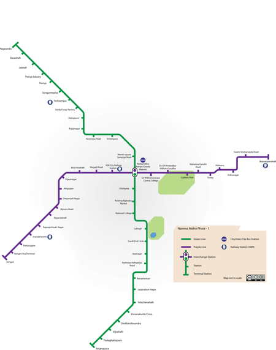
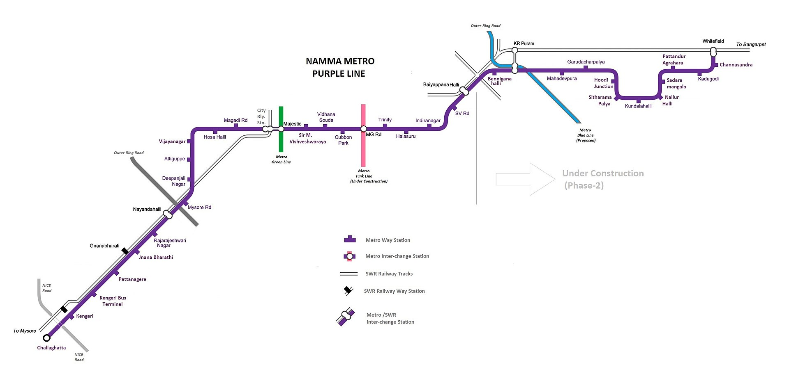

BMRCL Metro
This is about the Bengaluru metro famously called as the namma metro which started in the year 2011 with 2 reahces now has around
total of around 56.1KM length of the 2 lines. Purple line which is from BYPA to KNG and the green line from NGS to SKL. These cover
the major part of the city traffic.

Station Names
Purple Line

- Baiyappanahalli
- Swami Vivekananda Road
- Indiranagara
- Halasuru
- Trinity
- MG Road
- Cubbon Park (Sri Chamarajendra Park)
- Dr. BR. Ambedkar Station, Vidhana Soudha
- Sir M. Visveshwaraya Station
- Nadaprabhu Kempegowda station, Majestic
- City Railway Station
- Magadi Road
- Balagangadharanatha Swamiji Station, Hosahalli
- Vijayanagara
- Attiguppe
- Deepanjali Nagara
- Mysuru Road
- Nayandahalli
- Rajarajeshwari Nagara
- Jnanabharathi
- Pattanagere
- Kengeri Bus Terminal
- Kengeri
Officila metro website
Metro feedback form
Click to fill form